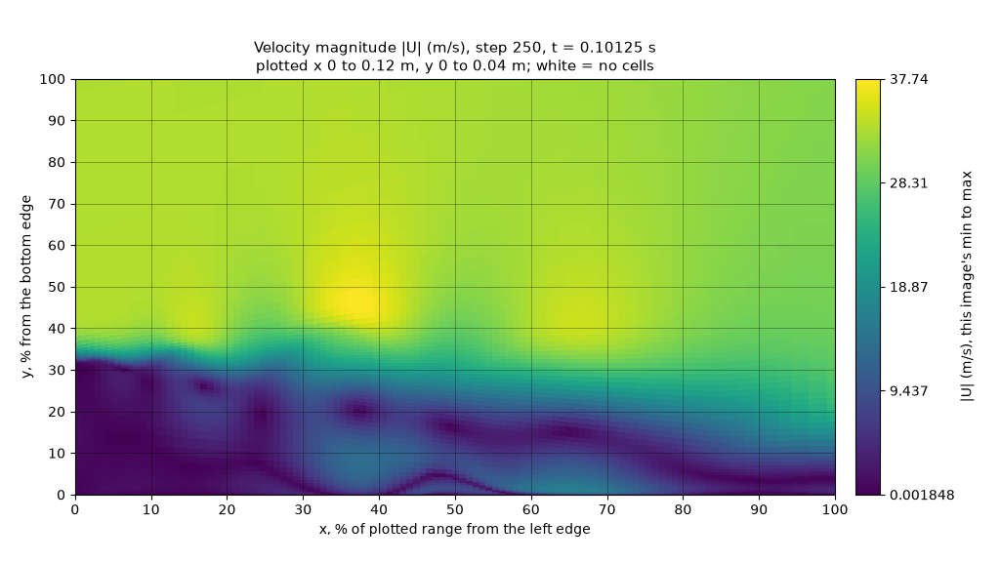
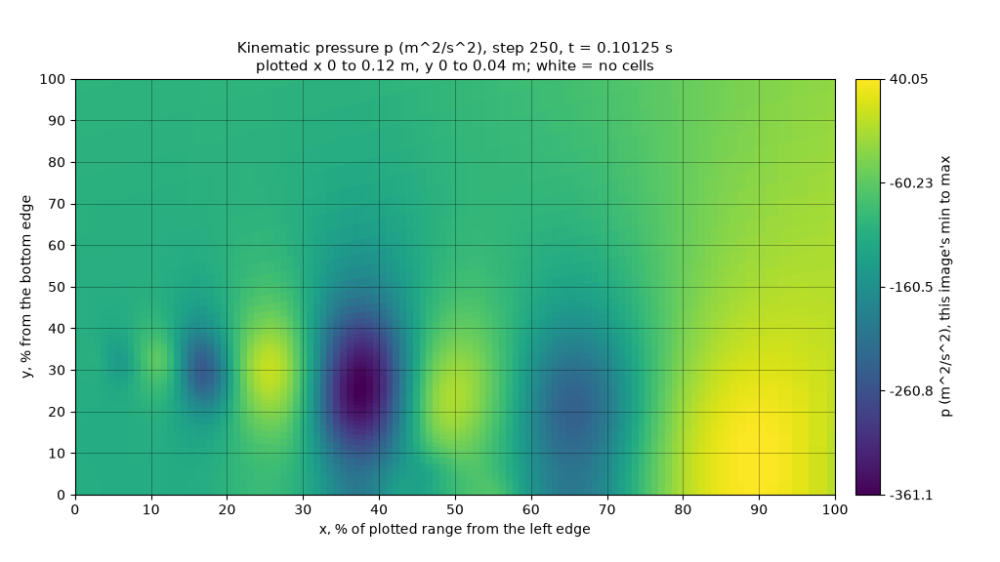

최신 보고서
10월 28일
요청 두 개 동시 진행, 3차원 단면, 불안정 감지 시험, 실행 중에 쓰는 텔레메트리, 콜백에서 계산한 추세 레이블
근거 자료: 요청 두 개 동시 진행 · 콜백 · 3차원 단면 · 불안정 감지 시험
PythonFOAM 포크 · PODFoam · llama.cpp
PythonFOAM의 PODFoam 예제에 붙인 선택 사항인 관찰 기능입니다. OpenFOAM 계산 중에 솔버가 상태를 Python에 넘기면, Python은 |U|와 p 이미지를 생성하고 llama.cpp로 로컬에서 실행하는 비전-언어 모델(VLM)에 이미지 설명을 요청합니다. 그동안 솔버는 응답을 기다리거나, 기다리지 않고 다음 시간 단계로 진행합니다. 응답은 기록만 하며, 모델 출력은 솔버 계산에 반영하지 않습니다.


응답한 위치가 정답 셀에서 표시 영역 크기의 10 % 이내에 있으면 맞힌 것으로 셉니다. 상수 기준선은 모든 이미지에 같은 답을 낼 때의 최고 점수입니다.
| 시험 | 결과 | 상수 기준선 |
|---|---|---|
| 최대 속도 지점과 최저 압력 지점, 표시 영역을 무작위로 정한 이미지 48장, 시드 세 개 (Gemma 4 12B, 26B-A4B, 31B, Qwen3.5-35B-A3B; v2) | 시드마다 48장 중 45~48장 (v1: 2~17장) | 7~10 |
실행 중인 솔버, 요청마다 표시 영역을 달리한 describe 요청 11개 (Gemma 4 12B; v2) | 11개 중 최대 속도 지점 9개, 최저 압력 지점 10개 | 4, 4 |
실행 중인 솔버, 24,000단계 동안 250단계마다 describe 요청 (Gemma 4 12B; v2) | 96개 중 최대 속도 지점 65개, 최저 압력 지점 89개 | 53, 65 |
| 세 시점에 걸친 최대 속도 추세, 시퀀스 45개 (Gemma 4 12B; v2own) | 45개 중 32개 (v1: 14개). 최대 속도가 2 % 이상 바뀐 시퀀스 30개 중 29개 | 15 |
| 불안정 여부, 계산 중단 전 또는 정상 종료한 실행의 프레임 세 장 시퀀스 54개 (모델 네 개; v2own) | 54개 중 30~33개. 배열에서 계산한 규칙은 33개와 38개 | 27 |
| 요청 비용 (Gemma 4 12B) | 250단계마다 요청을 하나씩 진행하면 단계당 벽시계 시간 +0.7 %. 50단계마다 두 개까지 동시에 진행하면 요청당 약 0.1 s. 저장 파일은 기준 실행(요청 없음)과 같음 | - |
한계
CPU 구성의 모델인 Gemma 4 E2B는 실용적인 수준의 응답을 내지 못합니다. Gemma 4 12B는 2 % 미만의 최대 속도 변화를 대부분 잘못 읽습니다. 계산 중단보다 5단계 넘게 앞서 경고한 모델은 없었고, 배열에서 계산한 간단한 수치가 모델과 같거나 더 많이 맞혔습니다. 시험 범위는 2차원 층류 유동과 압출한 3차원 케이스 하나, 모델 요청 없이 실행한 MPI rank 2개, 동시에 진행하는 요청 최대 두 개입니다.
최신 보고서부터 실었습니다. 근거 자료 폴더마다 해시 목록이 있습니다.
최신 보고서
요청 두 개 동시 진행, 3차원 단면, 불안정 감지 시험, 실행 중에 쓰는 텔레메트리, 콜백에서 계산한 추세 레이블
근거 자료: 요청 두 개 동시 진행 · 콜백 · 3차원 단면 · 불안정 감지 시험
추세 판독, 두 번째 형상(원기둥), 4비트 Qwen, 250단계마다 요청, 재현성, MPI
실행 중인 솔버가 생성한 v2 이미지, 무작위 표시 영역, 발달한 유동, Qwen 모델
이미지 판독 시험, E2B부터 31B까지 Gemma 4 모델 일곱 개, 이미지 방식 두 가지
비동기 실행, 스냅샷 하나와 시퀀스 재생, CPU의 E2B
10월 17일의 쌍별 요청을 GPU 노드의 Gemma 4 12B에 보낸 재생
동기 조건과 이미지 유무 쌍별 재생, CPU의 E2B
이미지 경로를 넣은 첫 다섯 케이스 실행